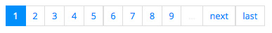
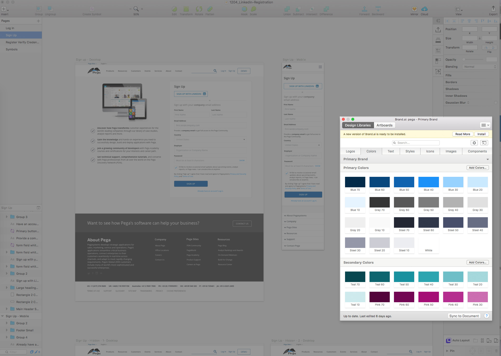

Design Problem
Component libraries has proven to be an effective, robust format for delivering documented code and design patterns. While we do have a coded pattern library, Pega currently lacks a cohesive and defined library for designers.
Objectives
- Define library principles
- Identify and define design components
- Create a maintainable library
- Provide designers with a way to access these components
Results
Design Component Principles
- Consistent:
Implementing reusable components helps keep design consistent and can provide clarity in organizing code.
- Maintainable:
A set of well-organized components can be quick to update and you can be more confident about which areas will and won't be affected
- Scalable:
Having a library of components to implement can make for speedy development and ensuring components are properly namespaced helps to avoid styles and functionality leaking into the wrong place as projects scale
- Independent:
Components should be able to be used on their own and rely on only a limited set of dependencies. They should be built so they don't 'leak' or cross-over into other components.
- Clearly defined:
Useful but limited scope - e.g. a button components + a search box component is better than a navbar components, but a search button and search input shouldn't be split up into separate components if they'll never be used independently.
- Encapsulated:
Components should 'wrap up' their functionality within themselves and provide set ways of implementation. E.g. a button component could expose "size" and "color" options.
- Reusable:
Components are often built with reusability in mind, although they may initially only be implemented once.
Component Examples
Pagination
The user needs to view a subset of sorted data in a comprehensible form.

Image Galleries
The user needs to browse a collection related images.
Component library Design Integration
I used a brand.ai, a design asset managment tool, to integrate our component system. This tool has a sketch plugin which fit perfectly into our workflow.
